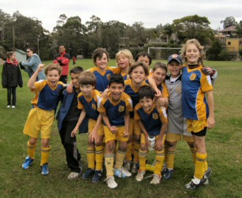

| Match Report - 14 June 2008 |
|
|
|
|
|
|
|
|
|
|
In the face of a chilly and windy morning the boys and gal were rearing to
go. With great defensive kicking from Jasmine and
some fancy footwork and attack by Hayden the team
managed to keep the opposition scoreless in the early stages.
Darcy cleared the field and made great breaks, just
missing a goal a couple of times, earning him Player of the Week, well done.
The opposition scored a few goals by the end of the first half with North
Ryde yet to score. Despite some valiant defence from all players including
Will, Henry and
Riley, the Ravens broke away with their goal
scoring late in the second half. Caelan scored a
great and our only goal in the dying seconds which ended the game on a high.
Another great effort by everyone, well done!
- Heidi
|
|
|
|
|
|
It was cold... it was windy... it was muddy, but crikey... it was
entertaining! With three regular stars out of the line-up and no fresh reserves
to pick from, we weren't expecting too much from our Koalas last Saturday. In fact,
it was thought that the only real exercise to keep warm might come from retrieving
the ball out of our own goal. How wrong you can be.
Conditions were tough, in particular one part of the ground that was covered
in mud. So everything was pointing to a low scoring affair and that was how
it started out for the first couple of minutes with both sides just 'feeling'
each other out. It was then that the Koalas started to pass the ball around
to each other that seemed to confuse the Ravens and opened the scoring with
a slick pass from Daniel to Charlie who coolly slotted it away.
It then became a bit of a procession with our boys intent on finding teammates
in a better position. Our 'stunts' man, Jaiden, was his usual creative self,
even trying moves that surprised his coaching staff... the opposition seemed
to be in awe of his skill as they just hung off him while he put on a show.
Daniel was again rock solid at the back putting his body on the line to repel
the Ravens' attacking raids. He only found it difficult getting accustomed to
running through the mud (I wonder where he gets that from?). Jarvis was once
again superb. Not only was he instrumental in getting our team going forward,
but he also unselfishly laid on at least five or six goals for teammates.
Instructions at half time were to take a few shots himself, but he again
continued to play a supporting role.
A special thanks to Stephen, who helped us out on the day. He had a great game
scoring a couple of goals and played a hand in a few others. We really would
have struggled without him as eventually four against five (plus reserves)
wears you down. What are you doing next week Stephen?
Last but not least, our Player of the Match, Charlie. Not much to say other
than very well deserved. At last count I think he scored about six goals!
Some were from sheer determination and skill and some with the help of his
team. The muddy surface didn't seem to affect his running at all as he seemed
to be a yard faster than his opponents. He even has the aeroplane celebration
thing happening after scoring... very impressive! (Did you teach him that one
Dad?)
Well done to the Ravens team as well. It's not easy being on the receiving
end as they were (and we've been there) but they never gave up and played
the game in a great spirit and thanks to those who were there watching on
the sideline and freezing like I was.
- Paul Bonaventura
|
|
|
|
|
|
It seemed to me like we hadn't trained or played a game since they invented
the ball. Thankfully the weather let up long enough for us to fit in forty
minutes of football. Meadowbank No 5 was our new cold and windy venue after
a move from a waterlogged Santa Rosa.
We got off to our usual slow start going down one-nil. Having spent all but
a few minutes of the entire match camped in the Saints United half we
conceding a goal against the run of play. Charlie
made a great diving save to his left but could only push the ball to one of
their players who scored off the rebound. Some excellent running to goal from
Shannon (great corner too!),
Adam (great corner too!) &
Patrick (your best game yet!) was a feature and
Eli seemed to be everywhere (great kick off the
left peg too!).
Mr reliable Tom H was impossible to get past at
the back and made some great dribbling runs forward.
Tom O kicked and tackled well and tried very hard
all day (kept goal well too!). Christopher made one
memorable header and tackled hard. David's kicking
and passing was first rate and he has a very strong right boot.
Jack's running and passing was excellent and seems
to be improving every week.
Overall a really good game with excellent effort from all. Passing and
dribbling was a feature only surpassed by the fun you all seemed to have.
Thanks to all the family and friends who braved the conditions to cheer on
what was a memorable win. Thanks guys.
- Tony Borg (Coach)
|
|
|
|
|
|
Well at least today we didn't get an early kick-off but with the chilly wind
prevailing I think some of the parents would rather have been running around
the field than spectating on the sidelines!
We lost to a solid Beecroft team today but it's good to see we never lose
spirit & keep trying to the end. The enthusiasm of the team is fantastic
& it's good to see that everyone is keen to play. With so many reserves
Scott is doing a great job in trying to keep
everyone happy. Sam was covering a lot of ground
in the middle again today.
Oscar & Rhea tried hard
up front but Beecroft always got back quickly to cover any danger.
Liam tried his hardest to make an impression &
Mitchell was often involved but for pure effort
& persistence, stopping Beecroft from scoring any more goals.
Thomas & Matthew were
outstanding in defence & midfield & they jointly won the award on Saturday.
A belated acknowledgement to Andrea who found her
team mates with some fantastic passes out of defence in our 2-1 win a few
weeks ago. You wouldn't see better in the Premier League!
Looking forward to training & having a go again next weekend!
- Allan Ball
|
|
|
|
|
|
With a couple of weeks of no training or games, we were wondering if the
players had forgotten the drill. We were quickly reminded that they had
remembered the lot, with lots of calling for the ball, running to free
space and some excellent hungry tackling.
The early part of the first half saw Redbacks slot 3 quick goals - but we
were running into a stiff 30kmh chilly wind. This was all the scoring they
did thanks to Thomas making some good saves in
goals... also the fact that in the second half we had the wind behind us.
Just on the stroke of half time, Encouragement award winner
Harrison eased a lovely floating chip over the
goalie's head for a 3-1 score line. And that was all the scoring for the
rest of the match.
The second half was a dire struggle with Player of the Match
Taylor instrumental in pulling off some lovely
'boots n all' tackles as well as some great dribbling.
At the final whistle we were all pretty glad to get out of there - as someone
said it was about to snow. Well done to all the players for a really gutsy
effort in difficult conditions. We all look forward to listening to Josh on
Wednesday for some great tips and then trying them out next Saturday!
- Andrew Curdie (Coach)
|
|
|
|
|
|
A long awaited win!

Let me set the scene. Friday night, U10/1 had a parent and player night out
at the Eastwood Rugby Club. A good time was had by all. We had soccer trivia
for the kids and parents. There was also a meat raffle and three meat trays
were won. There was some suggestion we needed to do this more often as the
players' performances the next day at the game improved out of sight.
Unfortunately, we had three of our players unavailable. Jared (GK) had a
fractured arm from the previous Monday game. William had a knee injury and
Ben was away on a scout camp. After a couple of phone calls at the dinner,
we secured two of the U9/1 players (Christian in goals and Koray in defence)
to cover two of the players down. Shannon from U8 also assisted in the first
half. The referee was thorough, and even checked the boys' studs on their
boots.
In the previous two matches against Saints United, we had lost both games
4-0 and 3-1 respectively. At kick off, North Ryde were quick to apply the
pressure and this was to continue throughout the entire match. Saints United
were the first to score. Despite it being 1-0 for Saints United at the
half-time whistle North Ryde appeared to have the strength and ability to
turn it around and achieve a win.
Overall the team played exceptionally well. Some achievements worth
mentioning are:
The long precise pass from Lachlan to Alex; the head-to-head pass between
Josh and Tom; marked improvement in our defenders assisted by Koray; Ryan
and Aymon were solid in their tackling and moving the ball forward quickly;
Aymon copped a couple of blows and gallantly played on; Christian was
certainly an asset in the goal, saving at least 6 goals against us.
The first North Ryde goal was from a free kick. Isaac lofted the ball towards
the top right-hand corner of the goal, which the Saints United goalkeeper
somehow managed to repel, only to be returned by Frazer into the back of the
net for goal. The second goal took us all by surprise. Alex was taken down
in the Saints United penalty box as he was about to shoot for goal, but
instead of the ref blowing his whistle to award a penalty, play continued
with Isaac quickly retrieving the ball and scoring (2 - 1 for North Ryde)
It was a fantastic game to watch, with plenty of nail-biting anxious moments.
Four minutes to full time. Saints United made a number attempts at our goal,
and were seeking an equalizer. Our anxiety was at bursting point! North Ryde
finally managed to get the ball away from our goal. As the ball was traveling
up the line to Saints United's goal, 3 year old Eli became our 12th man on
the field, for a second or two, as the ball approached him, he gave a kick.
The referee called 'ball in play'. North Ryde made a further attempt at goal
unsuccessfully. Shortly after, the full time whistle blew. That elusive win
finally came and there was great cheer and jumping for joy amongst the
parents and players alike

- Lesley Campbell (Manager)
|
|
|
|
|
|
Finally the team put it all together for a full 60 minutes and reaped the rewards with
a convincing win. The communication between players was excellent as was some of
the inter-passing between players in the midfield and forwards.
Sam B was once again outstanding at the back often turning defence into attack
and he was once again fittingly rewarded with a well taken goal. Liam T was
also solid at the back combining well with the other defenders to quickly cut
off any opposition attacking moves.
The game territorially belonged to our boys and during the match they forced
no less than 8 corners with an amazing 12 shots on goal, 4 of which were
converted with goals going to Stephen B-H, Jordan C , Sam B as well as an
own goal forced by some strong attacking pressure in the goal area following
a well taken corner by John P. John's set-play place kicks were all well and
truly on the mark and each was a potential goal scoring opportunity.
There was improvement in all areas of play, with better marker defence, better
communication between players and a much better degree of commitment by the
team from the opening whistle. The effort by the team provided a most
enjoyable, fast open game of entertaining soccer.
Well done to everyone and if you can repeat your performance with a full
60-minute effort this week Glenhaven are in for a huge fright.
Go get 'em!
- Bill Greer
|
|
|
|
|
|
First half highlights
With Pommie Pete serving his one match suspension and Firgal and Manu AWOL
and Mark M pretending to be working, Nth Ryde started the game with only 2
reserves. Now we all know the boys are not the youngest side running around
so they definitely needed a little more depth on the sideline. As usual I
had all the local hospitals lined up as the Holy Cross College boys looked
young and fit and ready to run our boys around.
It would seem that age might not be the only problem the boys have though.
On checking his bag, Flocko pulled out his stockings to wear... stockings I
hear you say - YES! He then quickly proceeded to blame his beautiful wife
Cath, who of course was not present, for packing them but I saw the red
lipstick that was also stashed away in his bag... Flocko do you have
something you want to let us know?
On with the game... Todd (Agro) made his comeback as keeper which meant
Macca slotted back into the halves, taking on the absent Mark M's role in
the centre. The side looked strong and prepared, would it convert into a
win for the boys? The play was slow to start but the boys soon got into a
rhythm. When the ball is on the turf and under control the Nth Ryde boys
always play well and play their style of football, but it seemed it was
going to be one of those days. After some nice play that Holy Cross College
couldn't keep up with, Pierre had a shot on goal, then Bruce, then Greg then
Pierre again. All decent shots mind you and all could have been converted
into goals, but as has happened all season, our direction was off and we
either hit the keeper or the ball flew above or to the side of the goals.
The frustration once again began to show and Nth Ryde became a little
rattled. This meant that Agro had to do some fancy footwork and pull off
some saves as Holy Cross College put some good football together. Nth Ryde
withstood the challenge though and Ado cleared the ball, Bruce got it under
control and took off like a leopard down the field. One on one with the
keeper and he finally put the ball in the back of the net. You could see
the relief as Pierre and Bruce ran back to the centre arm in arm (I think
of bit of Flocko's aura was rubbing off on the boys!) The job was not done
yet. Holy Cross College were rattled and began to show it, the ref had some
major issues to settle and the game got nasty. Thank goodness Pommie Pete
wasn't out there! Nth Ryde were playing well and Holy Cross College didn't
like it - not one little bit!
Half time Nth Ryde 1 - Holy Cross College 0
Second half highlights
After Holy Cross College were asked to play the centre kick off 3 times
(they forgot that the ref has to control the game not them), play finally
got under way. Nth Ryde immediately took control and won the ball which lead
to a burst onto the ball by Hicko. He had a shot but it went sailing over
the top of goals. The chances were there again for the boys but the
conversions weren't. Perhaps some midweek training might help boys?
Holy Cross College weren't sure how to tackle cleanly and play was dirty.
Nth Ryde were definitely playing the better football and this made Holy
Cross College furious. Two cards were awarded and the game became a stop
start affair with the free kicks becoming the order of the day. Another card
was issued and the card score was 2-1 to Holy Cross College, way outnumbering
the actual game score! Mark VH then had a shot on goal that once again sailed
over the top. The delivery of the ball from the backs and halves was great
and allowed our forwards to run onto some very nice passes. Was this Euro
2008 or the local derby?
As usual the boys had their chances but couldn't capitalise. Macca got onto
a clearance & put Pierre into space, the ball sailed from 30 metres out &
hit the cross bar. It was such a great shot coming from some great play that
deserved to be rewarded but again wasn't. The pressure didn't stop there,
another chance was saved & rebounded out and we had another hit which was
cleared by the Holy Cross College keeper. Corner to Nth Ryde. Bruce took the
corner and the ball flew into the square. Our players were no-where to be
seen but they didn't need to be. The keeper (who was under no pressure
whatsoever) went to save the ball but it deflected off him and into the
goals.
Hey we'll take them however they come.
2-0 win to Nth Ryde
Fifth place and climbing the ladder!!! Come on boys...
- FF
|